Discovery
Chapter 5: Discovery
Section 5.1: Textual Data
Section 5.1.2: Document-Term Matrix
dtm <- DocumentTermMatrix(corpus)
dtm## <<DocumentTermMatrix (documents: 85, terms: 4849)>>
## Non-/sparse entries: 44917/367248
## Sparsity : 89%
## Maximal term length: 18
## Weighting : term frequency (tf)inspect(dtm[1:5, 1:8])## <<DocumentTermMatrix (documents: 5, terms: 8)>>
## Non-/sparse entries: 4/36
## Sparsity : 90%
## Maximal term length: 7
## Weighting : term frequency (tf)
##
## Terms
## Docs abandon abat abb abet abhorr abil abject abl
## fp01.txt 0 0 0 0 0 0 0 1
## fp02.txt 0 0 0 0 0 1 0 0
## fp03.txt 0 0 0 0 0 0 0 2
## fp04.txt 0 0 0 0 0 0 0 1
## fp05.txt 0 0 0 0 0 0 0 0dtm.mat <- as.matrix(dtm)Section 5.1.3: Topic Discovery
library(wordcloud)## Loading required package: RColorBrewerwordcloud(colnames(dtm.mat), dtm.mat[12, ], max.words = 20) # essay No. 12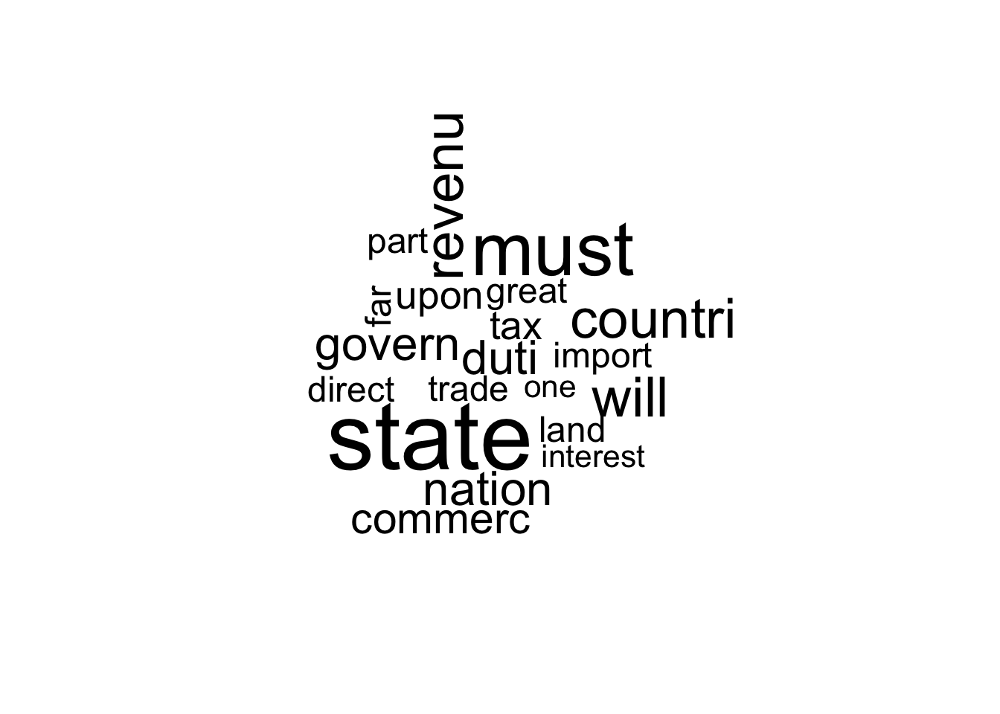
wordcloud(colnames(dtm.mat), dtm.mat[24, ], max.words = 20) # essay No. 24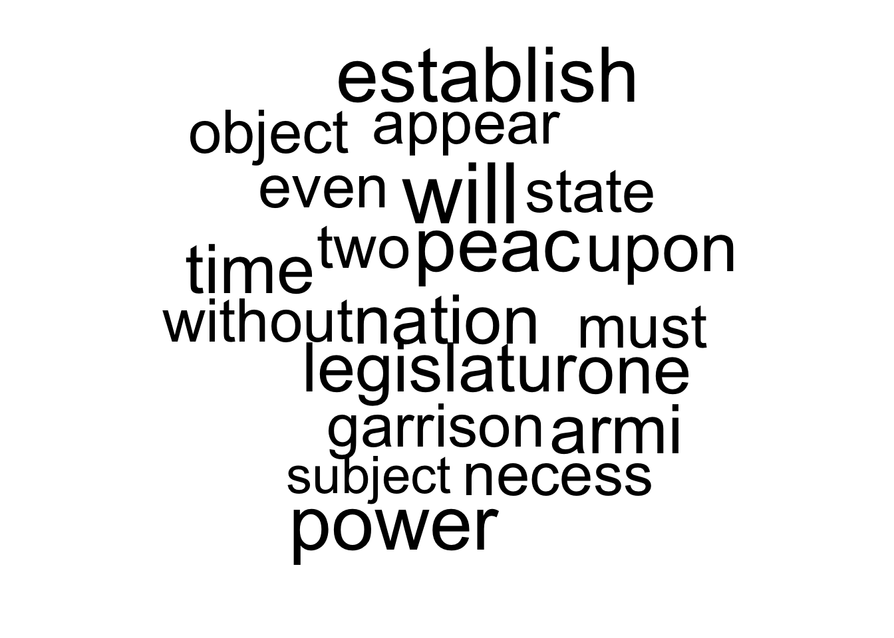
stemCompletion(c("revenu", "commerc", "peac", "army"), corpus.prep)## revenu commerc peac army
## "revenue" "commerce" "peace" "army"dtm.tfidf <- weightTfIdf(dtm) # tf-idf calculation
dtm.tfidf.mat <- as.matrix(dtm.tfidf) # convert to matrix
## 10 most important words for Paper No. 12
head(sort(dtm.tfidf.mat[12, ], decreasing = TRUE), n = 10)## revenu contraband patrol excis coast trade
## 0.01905877 0.01886965 0.01886965 0.01876560 0.01592559 0.01473504
## per tax cent gallon
## 0.01420342 0.01295466 0.01257977 0.01257977## 10 most important words for Paper No. 24
head(sort(dtm.tfidf.mat[24, ], decreasing = TRUE), n = 10)## garrison dockyard settlement spain armi frontier
## 0.02965511 0.01962294 0.01962294 0.01649040 0.01544256 0.01482756
## arsenal western post nearer
## 0.01308196 0.01306664 0.01236780 0.01166730k <- 4 # number of clusters
## subset The Federalist papers written by Hamilton
hamilton <- c(1, 6:9, 11:13, 15:17, 21:36, 59:61, 65:85)
dtm.tfidf.hamilton <- dtm.tfidf.mat[hamilton, ]
## run k-means
km.out <- kmeans(dtm.tfidf.hamilton, centers = k)
km.out$iter # check the convergence; number of iterations may vary## [1] 4## label each centroid with the corresponding term
colnames(km.out$centers) <- colnames(dtm.tfidf.hamilton)
for (i in 1:k) { # loop for each cluster
cat("CLUSTER", i, "\n")
cat("Top 10 words:\n") # 10 most important terms at the centroid
print(head(sort(km.out$centers[i, ], decreasing = TRUE), n = 10))
cat("\n")
cat("Federalist Papers classified: \n") # extract essays classified
print(rownames(dtm.tfidf.hamilton)[km.out$cluster == i])
cat("\n")
}## CLUSTER 1
## Top 10 words:
## court senat upon juri presid claus
## 0.006979236 0.004317092 0.003983231 0.003385189 0.002751280 0.002750835
## jurisdict offic tax impeach
## 0.002649711 0.002566185 0.002526463 0.002294396
##
## Federalist Papers classified:
## [1] "fp01.txt" "fp06.txt" "fp07.txt" "fp09.txt" "fp15.txt" "fp16.txt"
## [7] "fp17.txt" "fp21.txt" "fp22.txt" "fp23.txt" "fp27.txt" "fp30.txt"
## [13] "fp31.txt" "fp32.txt" "fp33.txt" "fp34.txt" "fp36.txt" "fp59.txt"
## [19] "fp60.txt" "fp61.txt" "fp65.txt" "fp66.txt" "fp68.txt" "fp70.txt"
## [25] "fp71.txt" "fp72.txt" "fp73.txt" "fp75.txt" "fp76.txt" "fp77.txt"
## [31] "fp78.txt" "fp79.txt" "fp80.txt" "fp81.txt" "fp82.txt" "fp83.txt"
## [37] "fp84.txt" "fp85.txt"
##
## CLUSTER 2
## Top 10 words:
## trade merchant northern navig manufactur revenu
## 0.013962253 0.012890018 0.010487956 0.010283154 0.009795735 0.009754859
## commerc southern market confederaci
## 0.009501991 0.009303222 0.009179588 0.006984902
##
## Federalist Papers classified:
## [1] "fp11.txt" "fp12.txt" "fp13.txt" "fp35.txt"
##
## CLUSTER 3
## Top 10 words:
## militia armi militari pardon governor treason
## 0.014639288 0.014493183 0.010024167 0.007643664 0.007114050 0.005833538
## disciplin peac presid garrison
## 0.005567509 0.005053636 0.004940856 0.004717510
##
## Federalist Papers classified:
## [1] "fp08.txt" "fp24.txt" "fp25.txt" "fp26.txt" "fp28.txt" "fp29.txt"
## [7] "fp69.txt" "fp74.txt"
##
## CLUSTER 4
## Top 10 words:
## vacanc recess claus senat session fill
## 0.06953047 0.04437713 0.04082617 0.03408008 0.03313305 0.03101140
## appoint presid expir unfound
## 0.02211662 0.01852025 0.01738262 0.01684465
##
## Federalist Papers classified:
## [1] "fp67.txt"Section 5.1.5: Cross-Validation
## proportion of correctly classified essays by Hamilton
mean(hm.fitted[author.data$author == 1] > 0)## [1] 1## proportion of correctly classified essays by Madison
mean(hm.fitted[author.data$author == -1] < 0)## [1] 1n <- nrow(author.data)
hm.classify <- rep(NA, n) # a container vector with missing values
for (i in 1:n) {
## fit the model to the data after removing the ith observation
sub.fit <- lm(author ~ upon + there + consequently + whilst,
data = author.data[-i, ]) # exclude ith row
## predict the authorship for the ith observation
hm.classify[i] <- predict(sub.fit, newdata = author.data[i, ])
}
## proportion of correctly classified essays by Hamilton
mean(hm.classify[author.data$author == 1] > 0)## [1] 1## proportion of correctly classified essays by Madison
mean(hm.classify[author.data$author == -1] < 0)## [1] 1disputed <- c(49, 50:57, 62, 63) # 11 essays with disputed authorship
tf.disputed <- as.data.frame(tfm[disputed, ])
## prediction of disputed authorship
pred <- predict(hm.fit, newdata = tf.disputed)
pred # predicted values## fp49.txt fp50.txt fp51.txt fp52.txt fp53.txt fp54.txt
## -0.99831799 -0.06759254 -1.53243206 -0.26288400 -0.54584900 -0.56566555
## fp55.txt fp56.txt fp57.txt fp62.txt fp63.txt
## 0.04376632 -0.57115610 -1.22289415 -1.00675456 -0.21939646par(cex = 1.25)
## fitted values for essays authored by Hamilton; red squares
plot(hamilton, hm.fitted[author.data$author == 1], pch = 15,
xlim = c(1, 85), ylim = c(-2, 2), col = "red",
xlab = "Federalist Papers", ylab = "Predicted values")
abline(h = 0, lty = "dashed")
## essays authored by Madison; blue circles
points(madison, hm.fitted[author.data$author == -1],
pch = 16, col = "blue")
## disputed authorship; black triangles
points(disputed, pred, pch = 17)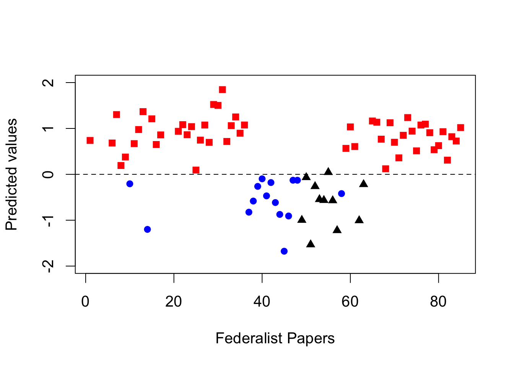
Section 5.2: Network Data
Section 5.2.1: Marriage Network in Renaissance Florence
## the first column "FAMILY" of the CSV file represents row names
data("florentine", package = "qss")
florence <- data.frame(florentine, row.names = "FAMILY")
## print out the adjacency (sub)matrix for the first 5 families
florence[1:5, 1:5]| ACCIAIUOL | ALBIZZI | BARBADORI | BISCHERI | CASTELLAN | |
|---|---|---|---|---|---|
| ACCIAIUOL | 0 | 0 | 0 | 0 | 0 |
| ALBIZZI | 0 | 0 | 0 | 0 | 0 |
| BARBADORI | 0 | 0 | 0 | 0 | 1 |
| BISCHERI | 0 | 0 | 0 | 0 | 0 |
| CASTELLAN | 0 | 0 | 1 | 0 | 0 |
rowSums(florence)## ACCIAIUOL ALBIZZI BARBADORI BISCHERI CASTELLAN GINORI GUADAGNI
## 1 3 2 3 3 1 4
## LAMBERTES MEDICI PAZZI PERUZZI PUCCI RIDOLFI SALVIATI
## 1 6 1 3 0 3 2
## STROZZI TORNABUON
## 4 3Section 5.2.2: Undirected Graph and Centrality Measures
par(cex = 1.25)
library("igraph") # load the package##
## Attaching package: 'igraph'## The following objects are masked from 'package:stats':
##
## decompose, spectrum## The following object is masked from 'package:base':
##
## unionflorence <- as.matrix(florence) # coerce into a matrix
florence <- graph.adjacency(florence, mode = "undirected", diag = FALSE)
plot(florence) # plot the graph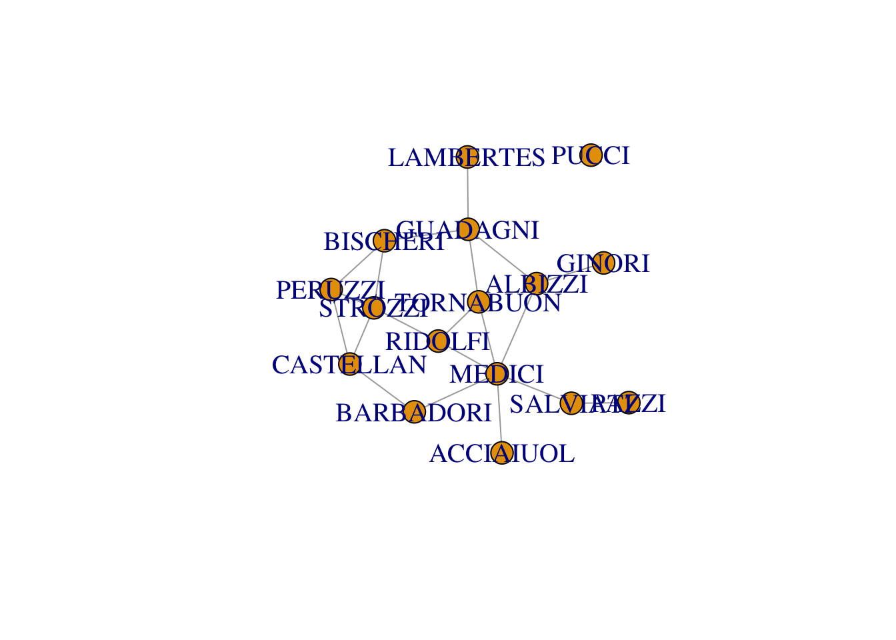
degree(florence)## ACCIAIUOL ALBIZZI BARBADORI BISCHERI CASTELLAN GINORI GUADAGNI
## 1 3 2 3 3 1 4
## LAMBERTES MEDICI PAZZI PERUZZI PUCCI RIDOLFI SALVIATI
## 1 6 1 3 0 3 2
## STROZZI TORNABUON
## 4 3closeness(florence)## ACCIAIUOL ALBIZZI BARBADORI BISCHERI CASTELLAN GINORI
## 0.018518519 0.022222222 0.020833333 0.019607843 0.019230769 0.017241379
## GUADAGNI LAMBERTES MEDICI PAZZI PERUZZI PUCCI
## 0.021739130 0.016949153 0.024390244 0.015384615 0.018518519 0.004166667
## RIDOLFI SALVIATI STROZZI TORNABUON
## 0.022727273 0.019230769 0.020833333 0.0222222221 / (closeness(florence) * 15)## ACCIAIUOL ALBIZZI BARBADORI BISCHERI CASTELLAN GINORI GUADAGNI
## 3.600000 3.000000 3.200000 3.400000 3.466667 3.866667 3.066667
## LAMBERTES MEDICI PAZZI PERUZZI PUCCI RIDOLFI SALVIATI
## 3.933333 2.733333 4.333333 3.600000 16.000000 2.933333 3.466667
## STROZZI TORNABUON
## 3.200000 3.000000betweenness(florence)## ACCIAIUOL ALBIZZI BARBADORI BISCHERI CASTELLAN GINORI GUADAGNI
## 0.000000 19.333333 8.500000 9.500000 5.000000 0.000000 23.166667
## LAMBERTES MEDICI PAZZI PERUZZI PUCCI RIDOLFI SALVIATI
## 0.000000 47.500000 0.000000 2.000000 0.000000 10.333333 13.000000
## STROZZI TORNABUON
## 9.333333 8.333333par(cex = 1.25)
plot(florence, vertex.size = closeness(florence) * 1000,
main = "Closeness")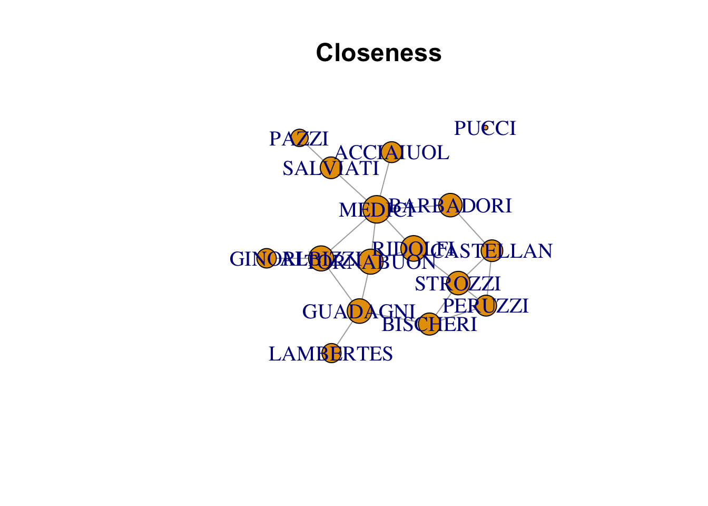
plot(florence, vertex.size = betweenness(florence),
main = "Betweenness")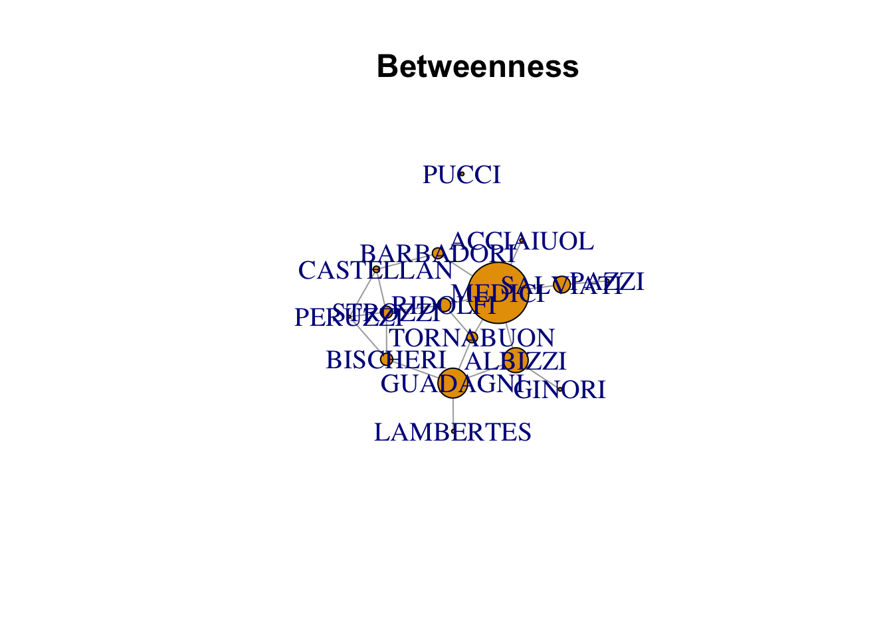
Section 5.2.3: Twitter-Following Network
data("twitter.following", package = "qss")
data("twitter.senator", package = "qss")
n <- nrow(twitter.senator) # number of senators
## initialize adjacency matrix
twitter.adj <- matrix(0, nrow = n, ncol = n)
## assign screen names to rows and columns
colnames(twitter.adj) <- rownames(twitter.adj) <- twitter.senator$screen_name
## change `0' to `1' when edge goes from node `i' to node `j'
for (i in 1:nrow(twitter.adj)) {
twitter.adj[twitter.following$following[i], twitter.following$followed[i]] <- 1
}
twitter.adj <- graph.adjacency(twitter.adj, mode = "directed", diag = FALSE)Section 5.2.4: Directed Graph and Centrality
twitter.senator$indegree <- degree(twitter.adj, mode = "in")
twitter.senator$outdegree <- degree(twitter.adj, mode = "out")
in.order <- order(twitter.senator$indegree, decreasing = TRUE)
out.order <- order(twitter.senator$outdegree, decreasing = TRUE)
## 3 greatest indegree
twitter.senator[in.order[1:3], ]| screen_name | name | party | state | indegree | outdegree | |
|---|---|---|---|---|---|---|
| 5 | SenatorBurr | Richard Burr | R | NC | 2 | 0 |
| 7 | JohnBoozman | John Boozman | R | AR | 2 | 0 |
| 8 | SenJohnBarrasso | John Barrasso | R | WY | 2 | 0 |
## 3 greatest outdegree
twitter.senator[out.order[1:3], ]| screen_name | name | party | state | indegree | outdegree | |
|---|---|---|---|---|---|---|
| 2 | RoyBlunt | Roy Blunt | R | MO | 1 | 46 |
| 1 | SenAlexander | Lamar Alexander | R | TN | 1 | 38 |
| 3 | SenatorBoxer | Barbara Boxer | D | CA | 0 | 7 |
n <- nrow(twitter.senator)
## color: Democrats = `blue', Republicans = `red', Independent = `black'
col <- rep("red", n)
col[twitter.senator$party == "D"] <- "blue"
col[twitter.senator$party == "I"] <- "black"
## pch: Democrats = circle, Republicans = diamond, Independent = cross
pch <- rep(16, n)
pch[twitter.senator$party == "D"] <- 17
pch[twitter.senator$party == "I"] <- 4
par(cex = 1.25)
## plot for comparing two closeness measures (incoming vs. outgoing)
plot(closeness(twitter.adj, mode = "in"),
closeness(twitter.adj, mode = "out"), pch = pch, col = col,
main = "Closeness", xlab = "Incoming path", ylab = "Outgoing path")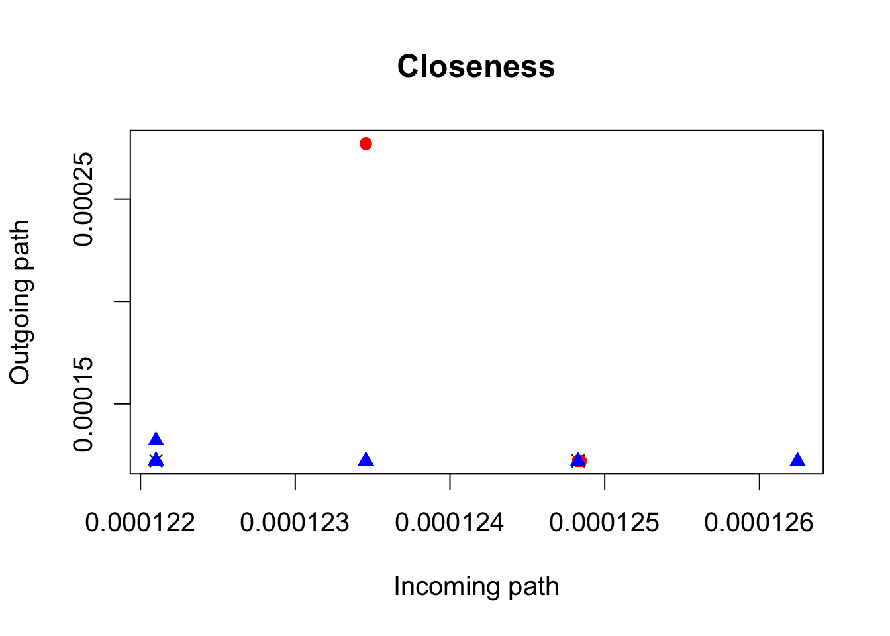
## plot for comparing directed and undirected betweenness
plot(betweenness(twitter.adj, directed = TRUE),
betweenness(twitter.adj, directed = FALSE), pch = pch, col = col,
main = "Betweenness", xlab = "Directed", ylab = "Undirected")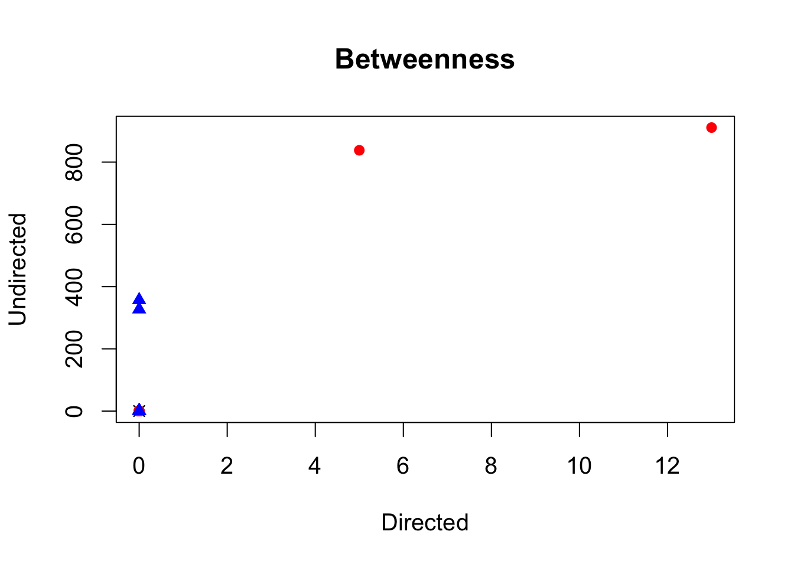
twitter.senator$pagerank <- page.rank(twitter.adj)$vector
par(cex = 1.25)
## `col' parameter is defined earlier
plot(twitter.adj, vertex.size = twitter.senator$pagerank * 1000,
vertex.color = col, vertex.label = NA,
edge.arrow.size = 0.1, edge.width = 0.5)
PageRank <- function(n, A, d, pr) { # function takes 4 inputs
deg <- degree(A, mode = "out") # outdegree calculation
for (j in 1:n) {
pr[j] <- (1 - d) / n + d * sum(A[ ,j] * pr / deg)
}
return(pr)
}
nodes <- 4
## adjacency matrix with arbitrary values
adj <- matrix(c(0, 1, 0, 1, 1, 0, 1, 0, 0, 1, 0, 0, 0, 1, 0, 0),
ncol = nodes, nrow = nodes, byrow = TRUE)
adj| 0 | 1 | 0 | 1 |
| 1 | 0 | 1 | 0 |
| 0 | 1 | 0 | 0 |
| 0 | 1 | 0 | 0 |
adj <- graph.adjacency(adj) # turn it into an igraph object
d <- 0.85 # typical choice of constant
pr <- rep(1 / nodes, nodes) # starting values
## maximum absolute difference; use a value greater than threshold
diff <- 100
## while loop with 0.001 being the threshold
while (diff > 0.001) {
pr.pre <- pr # save the previous iteration
pr <- PageRank(n = nodes, A = adj, d = d, pr = pr)
diff <- max(abs(pr - pr.pre))
}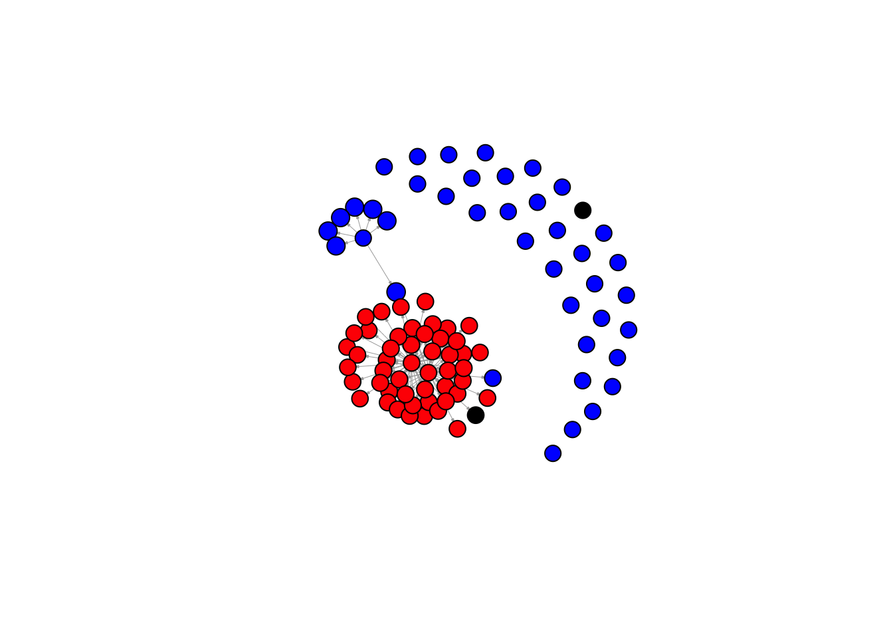
pr## [1] 0.2213090 0.4316623 0.2209565 0.1315563Section 5.3: Spatial Data
Section 5.3.2: Spatial Data in R
library(maps)
data(us.cities)
head(us.cities)| name | country.etc | pop | lat | long | capital |
|---|---|---|---|---|---|
| Abilene TX | TX | 113888 | 32.45 | -99.74 | 0 |
| Akron OH | OH | 206634 | 41.08 | -81.52 | 0 |
| Alameda CA | CA | 70069 | 37.77 | -122.26 | 0 |
| Albany GA | GA | 75510 | 31.58 | -84.18 | 0 |
| Albany NY | NY | 93576 | 42.67 | -73.80 | 2 |
| Albany OR | OR | 45535 | 44.62 | -123.09 | 0 |
par(cex = 1.25)
map(database = "usa")
capitals <- subset(us.cities, capital == 2) # subset state capitals
## add points proportional to population using latitude and longitude
points(x = capitals$long, y = capitals$lat,
cex = capitals$pop / 500000, pch = 19)
title("US state capitals") # add a title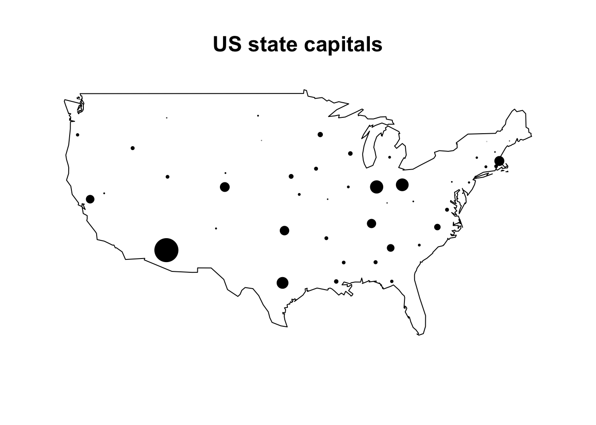
par(cex = 1.25)
map(database = "state", regions = "California")
cal.cities <- subset(us.cities, subset = (country.etc == "CA"))
sind <- order(cal.cities$pop, decreasing = TRUE) # order by population
top7 <- sind[1:7] # seven cities with largest population
map(database = "state", regions = "California")
points(x = cal.cities$long[top7], y = cal.cities$lat[top7], pch = 19)
## add a constant to latitude to avoid overlapping with circles
text(x = cal.cities$long[top7] + 2.25, y = cal.cities$lat[top7],
label = cal.cities$name[top7])
title("Largest cities of California")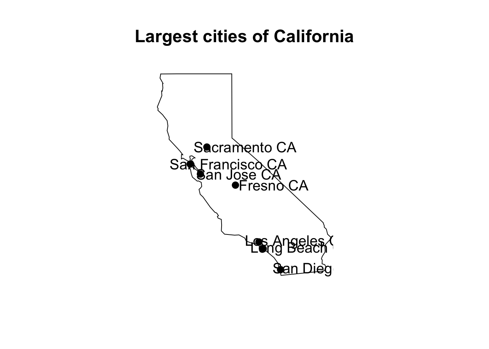
usa <- map(database = "usa", plot = FALSE) # save map
names(usa) # list elements## [1] "x" "y" "range" "names"length(usa$x)## [1] 7252head(cbind(usa$x, usa$y)) # first five coordinates of a polygon| -101.4078 | 29.74224 |
| -101.3906 | 29.74224 |
| -101.3620 | 29.65056 |
| -101.3505 | 29.63911 |
| -101.3219 | 29.63338 |
| -101.3047 | 29.64484 |
Section 5.3.3: Colors in R
allcolors <- colors()
head(allcolors) # some colors## [1] "white" "aliceblue" "antiquewhite" "antiquewhite1"
## [5] "antiquewhite2" "antiquewhite3"length(allcolors) # number of color names## [1] 657red <- rgb(red = 1, green = 0, blue = 0) # red
green <- rgb(red = 0, green = 1, blue = 0) # green
blue <- rgb(red = 0, green = 0, blue = 1) # blue
c(red, green, blue) # results## [1] "#FF0000" "#00FF00" "#0000FF"black <- rgb(red = 0, green = 0, blue = 0) # black
white <- rgb(red = 1, green = 1, blue = 1) # white
c(black, white) # results## [1] "#000000" "#FFFFFF"rgb(red = c(0.5, 1), green = c(0, 1), blue = c(0.5, 0))## [1] "#800080" "#FFFF00"## semi-transparent blue
blue.trans <- rgb(red = 0, green = 0, blue = 1, alpha = 0.5)
## semi-transparent black
black.trans <- rgb(red = 0, green = 0, blue = 0, alpha = 0.5)
par(cex = 1.25)
## completely colored dots; difficult to distinguish
plot(x = c(1, 1), y = c(1, 1.2), xlim = c(0.5, 4.5), ylim = c(0.5, 4.5),
pch = 16, cex = 5, ann = FALSE, col = black)
points(x = c(3, 3), y = c(3, 3.2), pch = 16, cex = 5, col = blue)
## semi-transparent; easy to distinguish
points(x = c(2, 2), y = c(2, 2.2), pch = 16, cex = 5, col = black.trans)
points(x = c(4, 4), y = c(4, 4.2), pch = 16, cex = 5, col = blue.trans)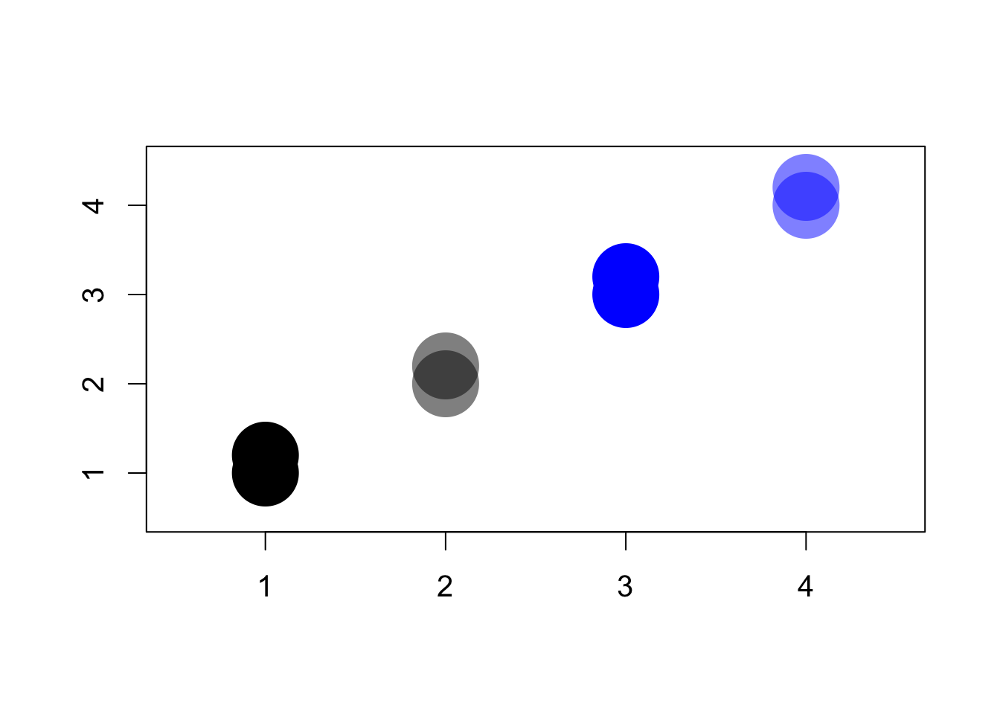
Section 5.3.4: US Presidential Elections
data("pres08", package = "qss")
## two-party vote share
pres08$Dem <- pres08$Obama / (pres08$Obama + pres08$McCain)
pres08$Rep <- pres08$McCain / (pres08$Obama + pres08$McCain)
## color for California
cal.color <- rgb(red = pres08$Rep[pres08$state == "CA"],
blue = pres08$Dem[pres08$state == "CA"],
green = 0)
par(cex = 1.25)
## California as a blue state
map(database = "state", regions = "California", col = "blue",
fill = TRUE)## California as a purple state
map(database = "state", regions = "California", col = cal.color,
fill = TRUE)par(cex = 1.25)
## America as red and blue states
map(database = "state") # create a map
for (i in 1:nrow(pres08)) {
if ((pres08$state[i] != "HI") & (pres08$state[i] != "AK") &
(pres08$state[i] != "DC")) {
map(database = "state", regions = pres08$state.name[i],
col = ifelse(pres08$Rep[i] > pres08$Dem[i], "red", "blue"),
fill = TRUE, add = TRUE)
}
}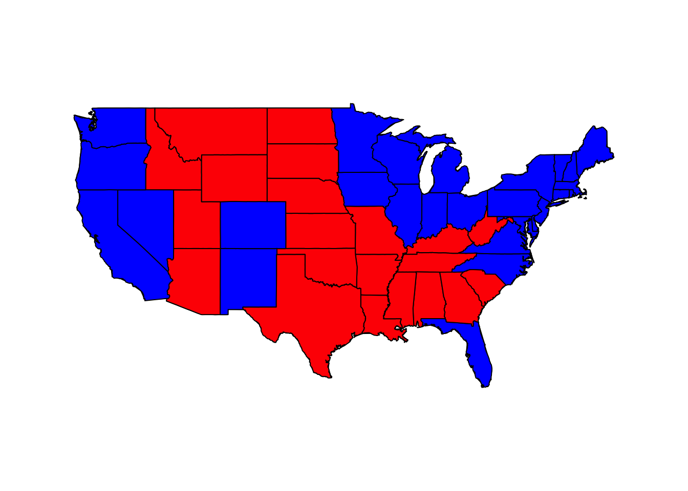
## America as purple states
map(database = "state") # create a map
for (i in 1:nrow(pres08)) {
if ((pres08$state[i] != "HI") & (pres08$state[i] != "AK") &
(pres08$state[i] != "DC")) {
map(database = "state", regions = pres08$state.name[i],
col = rgb(red = pres08$Rep[i], blue = pres08$Dem[i],
green = 0), fill = TRUE, add = TRUE)
}
}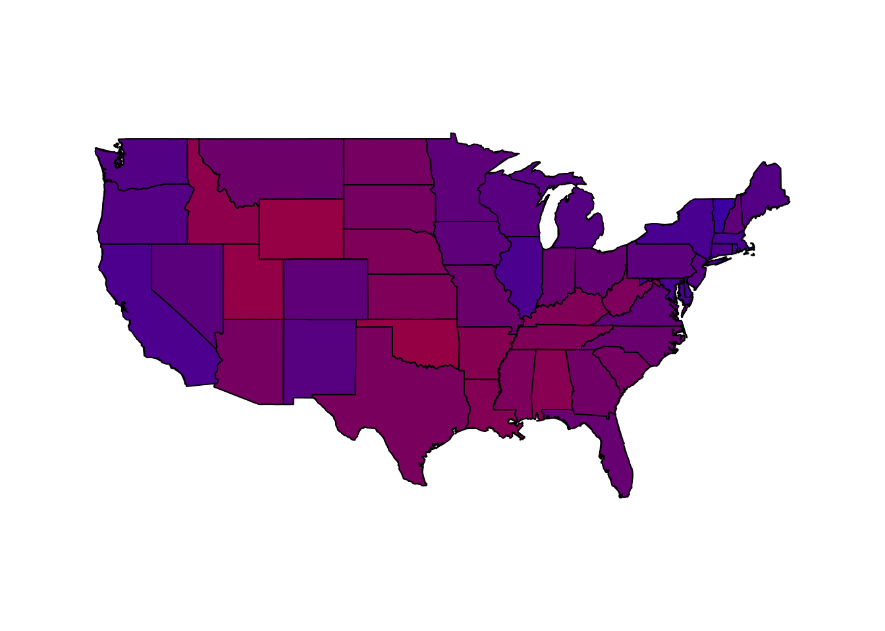
Section 5.3.5: Expansion of Walmart
data("walmart", package = "qss")
## red = WalMartStore, green = SuperCenter, blue = DistributionCenter
walmart$storecolors <- NA # create an empty vector
walmart$storecolors[walmart$type == "Wal-MartStore"] <-
rgb(red = 1, green = 0, blue = 0, alpha = 1/3)
walmart$storecolors[walmart$type == "SuperCenter"] <-
rgb(red = 0, green = 1, blue = 0, alpha = 1/3)
walmart$storecolors[walmart$type == "DistributionCenter"] <-
rgb(red = 0, green = 0, blue = 1, alpha = 1/3)
## larger circles for DistributionCenter
walmart$storesize <- ifelse(walmart$type == "DistributionCenter", 1, 0.5)
par(cex = 1.25)
## map with legend
map(database = "state")
points(walmart$long, walmart$lat, col = walmart$storecolors,
pch = 19, cex = walmart$storesize)
legend(x = -120, y = 32, bty = "n",
legend = c("Wal-Mart", "Supercenter", "Distrib. Center"),
col = c("red", "green", "blue"), pch = 19, # solid circles
pt.cex = c(0.5, 0.5, 1)) # size of circles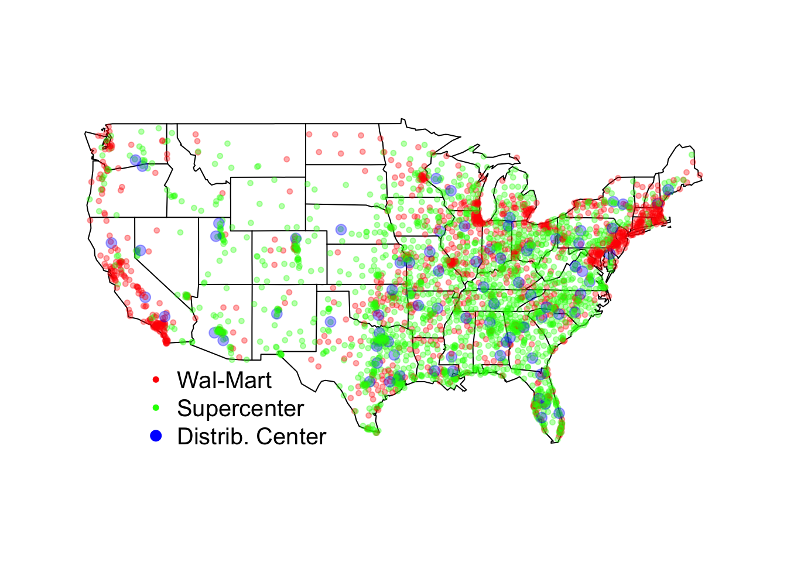
Section 5.3.6: Animation in R
walmart.map <- function(data, date) {
walmart <- subset(data, subset = (opendate <= date))
map(database = "state")
points(walmart$long, walmart$lat, col = walmart$storecolors,
pch = 19, cex = walmart$storesize)
}
par(cex = 1.25)
walmart$opendate <- as.Date(walmart$opendate)
walmart.map(walmart, as.Date("1974-12-31"))
title("1975")
walmart.map(walmart, as.Date("1984-12-31"))
title("1985")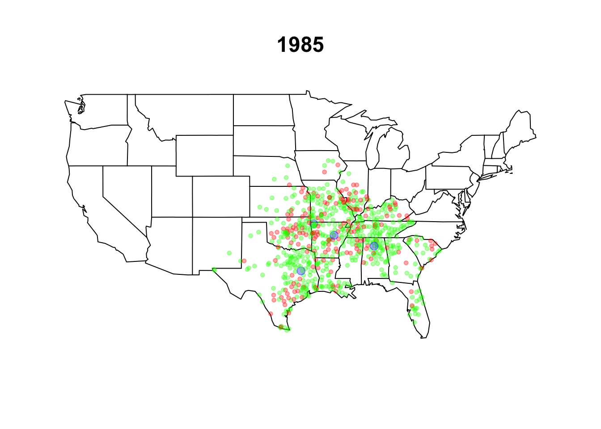
walmart.map(walmart, as.Date("1994-12-31"))
title("1995")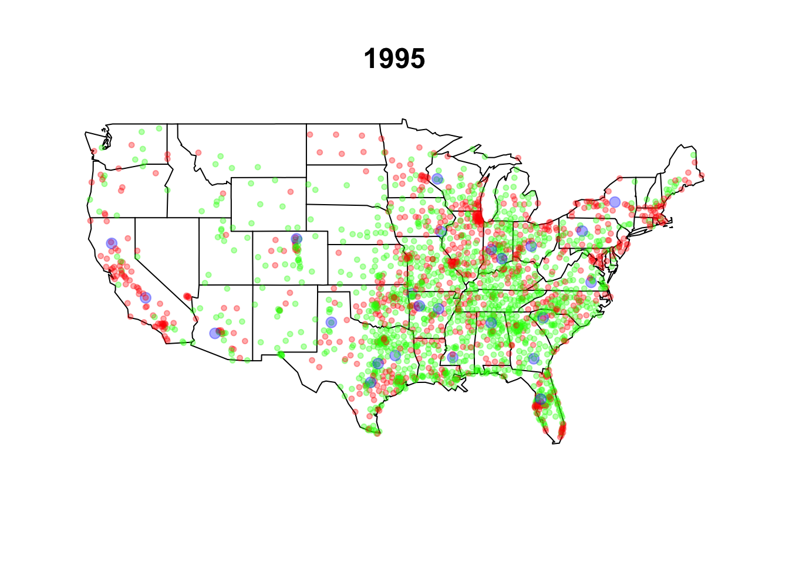
walmart.map(walmart, as.Date("2004-12-31"))
title("2005")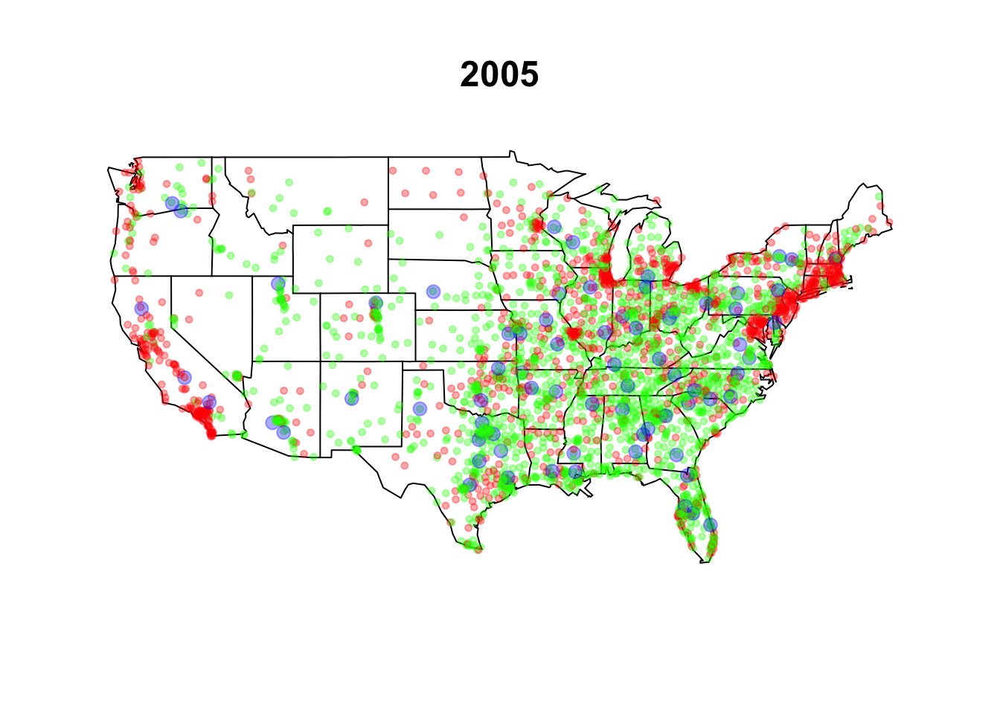
n <- 25 # number of maps to animate
dates <- seq(from = min(walmart$opendate),
to = max(walmart$opendate), length.out = n)
## library("animation")
## saveHTML({
## for (i in 1:length(dates)) {
## walmart.map(walmart, dates[i])
## title(dates[i])
## }
## }, title = "Expansion of Walmart", htmlfile = "walmart.html",
## outdir = getwd(), autobrowse = FALSE)